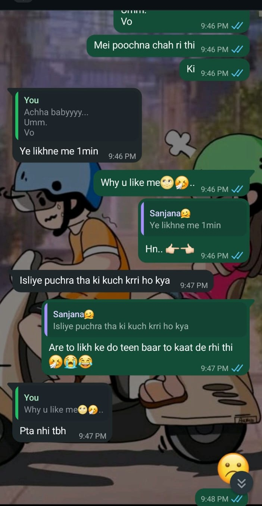
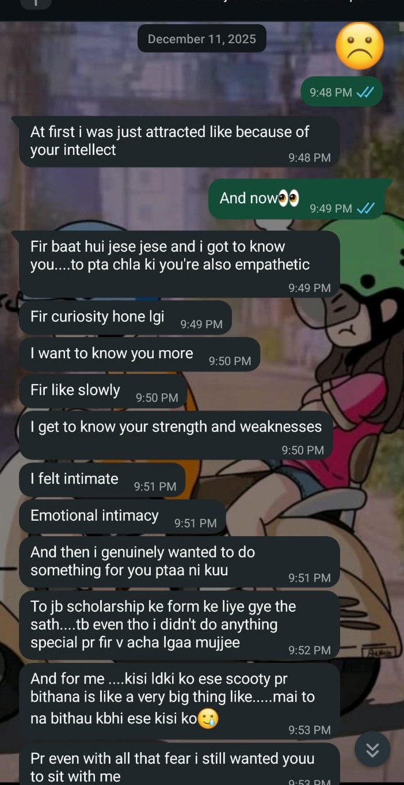
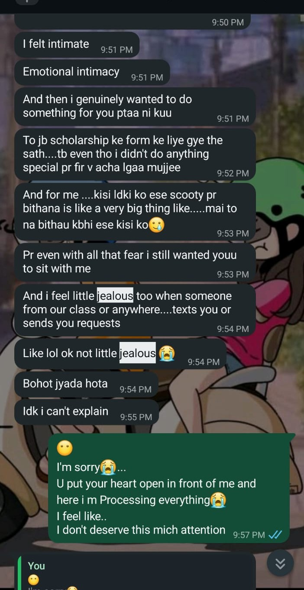
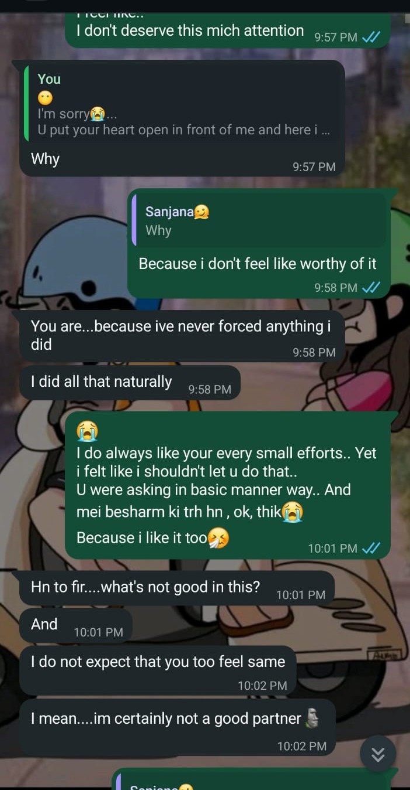
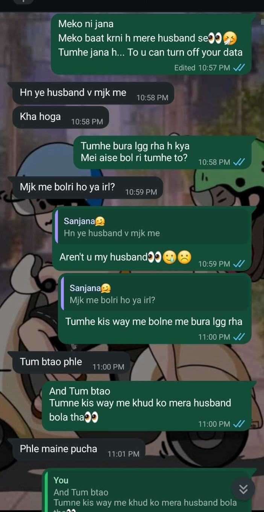
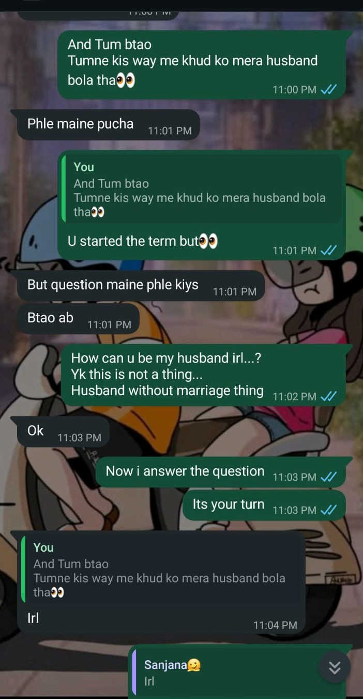
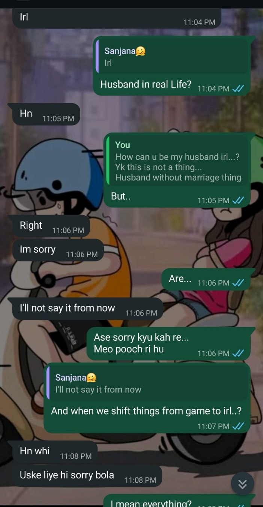
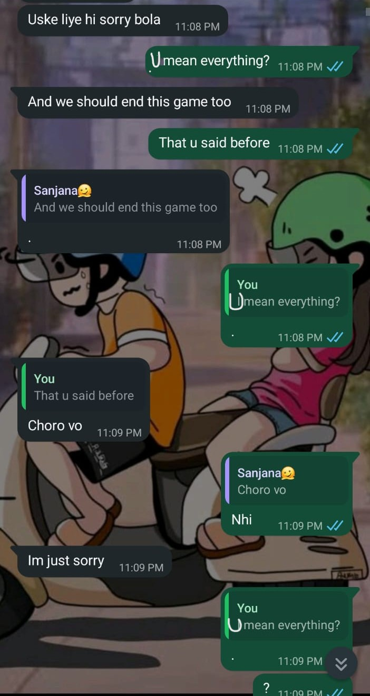
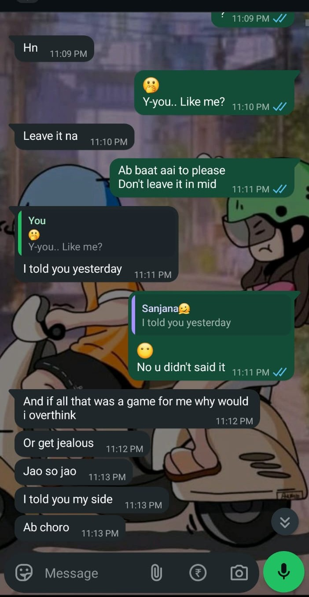
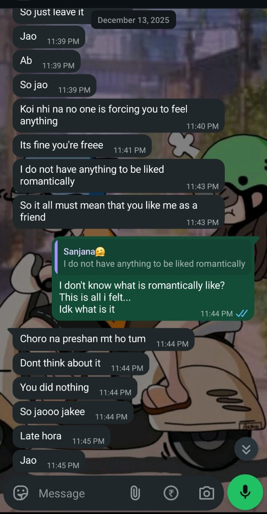

Every story has a beginning.
Ours began with a college project.
Devanshu sir asked everyone in class to make a team of ten members for our project. Like everyone else, we also started searching for teammates.
Then one day, Yanshi came to me and said, "Someone wants to join our team."
She gave me your number.
I had absolutely no idea who you were. I knew your name, but that was all. We had never talked before.
So I sent you a message... simply because we needed teammate.
Our first conversation was completely about the project.
But somewhere during that conversation, something felt... different.
You replied so politely. So patiently. You made the entire conversation feel so effortless that I didn't even realize how comfortable I had become while talking to you.
It was strange.
We had only talked for a little while, yet I already had one thought in my mind...
"I really want you to be in our team."
We started talking because of the project.
That's all it was supposed to be.
Just project messages.
But somehow...
You made everything feel comfortable.
Talking to you felt easy. Safe.
Without realizing it... I became the one finding random excuses just to text you again.
Every conversation somehow became longer than the last one.
Every time I saw your name pop up on my screen... I felt happy.
We'd start talking about a slide or an assignment, and before we knew it, hours had flown by.
One day... I randomly called you "Princess."
To be fair, I secretly started thinking of you as a "Princess" in my head first because you have so much casual drama and literally demand princess treatment all the time! You always want 100% of the attention. So, in my mind, it was just a funny, cute fit.
When I finally dropped it in the chat and called you "Princess," you immediately lost it. You were like, "I'm not a princess!" and went off on a whole "blah blah blah" rant denying it. I just laughed and said, "Okay, but you are a princess for me, okay?"
Realizing you weren't winning that argument, you decided you had to get back at me. You said, "Okay fine, I got it. But if I'm your princess, then I'm giving you a name too. You are Prince. You're gonna be my Prince." And that's how our chaotic roles actually started.
And just like that... Our favorite nicknames were born.
From that day... We became each other's Prince and Princess.
At first... You were my Princess. And I became your Prince.
There was only one tiny problem.
I was absolutely terrible at being a Prince.
Every time you said something... I had no idea what to reply. My brain simply stopped working.
So one day... We switched.
You became my Prince. I became your Princess.
Somehow... It felt even more natural.
Every day, I quietly waited for college to end. Because I knew... Our little world would begin again.
Just you. Just me. A Prince. A Princess.
Those conversations became the happiest part of my day.
Then came 11 December.
It all started with one random question while we were in our usual chat zone
I simply asked... " why do you like me?"
I was still talking as your Princess. I thought we were still inside our little world.
Then... You replied.You poured your heart out into your responses, and I sat there reading them, smiling like crazy.
Even though I was incredibly happy reading your words, I was still too defensive to admit it. I kept telling myself, "No, he's just playing his character really well," because I was too scared to realize that you actually meant every single word.
So... I still thought we were simply talking as Prince and Princess. I hope you remeber all these chats.i just want you to relive that moment so i am sharing these screenshots of our chat on 11 December. I hope you felt what i felt when I read them for the first time and every time when i read them again I smile everytime.




13 december... Everything finally made sense. Those messages from December 11th weren't a game at all. You actually meant it all from the bottom of your heart.
The little moments. The way you looked at our conversations.
They were never just part of our game. You meant every single one of them. wanna relive those moments....you were somehow upset cause i called you husband .... and it was normal for us cause we call each other husband and wife in our little prince pricess world but you were upset cause i called you husband in our game and i remember i was still trying to act like i don't understand what you actually mean...so i asked you tell me clearly....wait ig those ss will help you to remeber






That night... I couldn't stop thinking.
I kept asking myself... What exactly am I feeling? Was it just friendship? Or had my heart quietly fallen for you too?
It was one of the longest nights I can remember.
Then... Morning came. And so did my answer.
This time... It was my turn. I confessed too.
From that morning on, the Prince and Princess nicknames weren't just a fun text game anymore—they became our real life story.
it's been more than six months since we started this beautiful journey together.
Six months of laughter. Six months of love. Six months of memories.
Thank you... For answering one project message.
For making me feel comfortable. For becoming my Prince. For becoming my best friend.
For becoming the person I love the most.
And for becoming everything to me.
I don't know what tomorrow holds. But I know one thing.
As long as life allows me... I'll choose you. Again. Every single day.
Happy Birthday, my Prince. I love you more than these words could ever explain.
Forever Yours,
Your Wife,
Aru ❤️
This little website could never contain every memory we've created together.
It is simply a journey back to where our story began.
Six months... Countless memories... Infinite love.
Unlike fairy tales... Our story doesn't end here.
This is only the beginning of every chapter we'll write together.
❤️ Chuchu & Aru ❤️